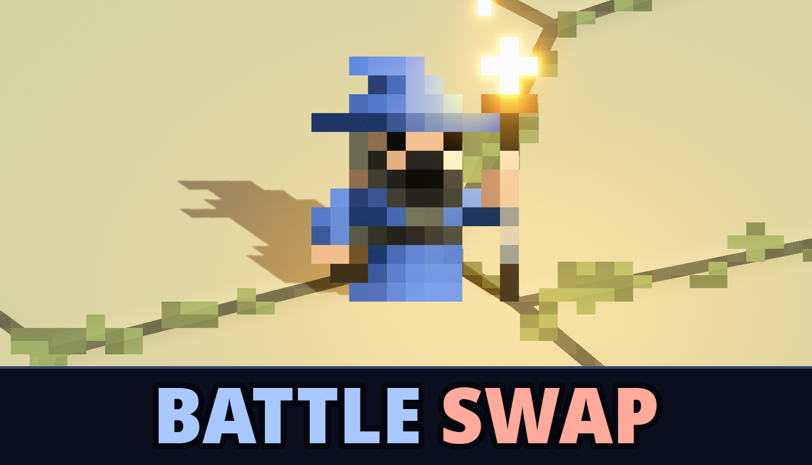

Luke Hartman Games
Luke Hartman Games is a solo game developer. Battle Swap is a single-player auto-battler about winning by trading your deployed units for the enemy's, with rewards for using fewer units.

Battle Swap is an auto-battler with a single player campaign and a unique twist: when you win a battle, you trade your deployed units for your enemy's, rewarding you for using fewer units. Unlock upgrades, items, and spells as you go, and revisit past battles to improve solutions and reclaim units.
Play free in browser on itch.io